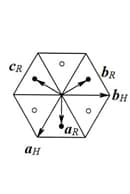

Rhombohedral cell (En). Ромбоэдрическая ячейка (Ru).
Trigonal singoniyaga tegishli va aR = bR = cR, αR = βR = γR ≠ 90o parametrlari bilan romboedr shakliga (primitiv romboedrik panjara, P harfi belgilanadi) ega bo'lgan kristallning elementar yacheykasi. Ushbu kirstallning Brave yacheykasi geksagonal tizimida ikkita qo'shimcha panjara nuqtasi (tuguni)ni o'z ichiga olib, ular yacheykaning hajmiy uzun diagonalini uchta teng qismga bo’ladi (ikki marta markazlashgan geksagonal yacheyka, R harfi bilan belgilanadi) va aH = bH ≠ cH, αH = βH = 90o, γH = 120o parametrlariga ega bo’ladi. Yacheykalarning ikki vektorlari orasidagi bog’liqlik qiyidagi munosabatlar orqali ifodalanadi: aH = aR – bR, bH = bR – cR, cH = aR + bR + cR .

31-rasm. Primitiv romboedrik va ikki marta markazlasgan geksagonal yacheykalar o'rtasidagi munosabatlar: a - reja; b - aksonometrik.